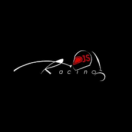
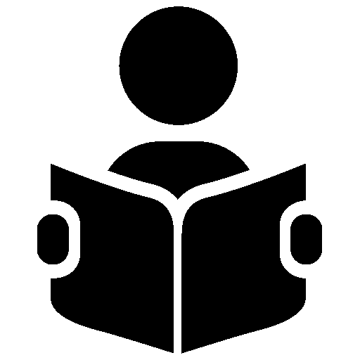

Work Experience

DJS Racing
(March 2019 - March 2021)
System Designer
● DJS Racing is the formula student team of Dwarkadas J Sanghvi College of Engineering. The team designs,
manufactures and tests formula race car prototypes in EV category.
● Designed and tested the Data Acquisition System (DAQ) of the car for season 2020 and 2021. Microcontrollers used
were STM32F1 blue pill and Teensy 4.1 respectively. Crucial modules used were ESP8266, HC-12 RF
Transmissiob module, GPS module and CH376S USB module.
● Designed PCBs like the DAQ PCB, Wheel speed sensor PCB and Load cell Amplifier PCB using Altium.
The Tann Mann Foundation
(Jun 2021 – Aug 2021)
Intern
● Developed a Lottery System page using JavaScript and Firebase which handles a database of users and generates a random lucky winner.about cancer
● Integrated the Raspberry Pi Cam to Raspberry Pi to develop a face recognition system using OpenCV.

Gravitas AI
(Nov 2021 - Jan 2022)
Research Intern and Content Editor
● Researched and catalogued content based on Cancer in a meaningful and structured manner which could
be used in designing AI based solutions in the field of Oncology such as developing a chatbot which gives information about cancer
● Designed detailed Conversation Flow designs for cognitive implementations.
Indian Insitute of Technology - Delhi
(June 2021 - May 2022)
Research Intern
● Investigated the application of Artificial Intelligence and Natural Language Processing in the Indian Judiciary
System and how AI may be used to augment the judiciary.
● Implemented several summarization models (LexRank, Latent Semantic Analysis, T5, Bart-large-CNN) using Machine Learning and Deep
Learning to summarize lengthy case documents which were 30% the length of the original documents and compared the results